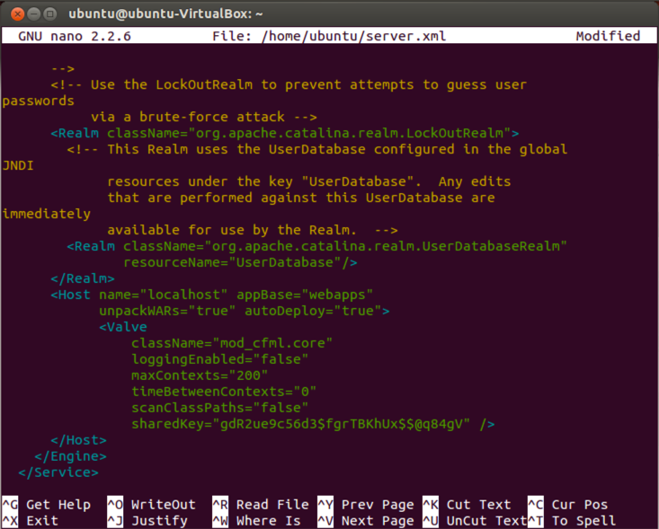

Tomcat Valve on Linux
Install mod_cfml Tomcat Valve on Linux
The mod_cfml Tomcat Valve is the part of the mod_cfml suite that takes the information passed to it from the Web Server and automatically creates a Tomcat host or host alias with it. The following steps cover installing the mod_cfml Tomcat Valve on a Linux System.
All steps provided are done from the command-line for uniformity. If you have a graphic desktop, you can perform these steps by opening a terminal window and running these commands.
Also, for the sake of uniformity, this tutorial will use "/opt/tomcat" as our tomcat installation directory. Your Tomcat installation directory may be different depending on how you installed it. There are too many methods of installing to cover them all here.
IMPORTANT: If you're running these commands on Ubuntu / Mint / Debian, you will need to pre-clude them with the "sudo" command. IE: sudo wget...
Download mod_cfml Tomcat Valve
If you haven't already, go ahead and download the mod_cfml Tomcat Valve.:
wget https://github.com/viviotech/mod_cfml/blob/master/java/mod_cfml-valve_v1.1.05.jar?raw=trueIMPORTANT: The above URL points to version 1 of mod_cfml. mod_cfml may have been upgraded since this documentation was written. You may need to use an updated URL.
After you have download the Tomcat Valve, move it to your Tomcat's "lib" directory, which is usually [tomcat home]/lib/. In our example, we'll use /opt/tomcat/ just for the sake of simplicity.
mv mod_cfml-valve.jar /opt/tomcat/lib/Configure the mod_cfml Tomcat Valve
Now that the valve is installed into Tomcat, we need to configure Tomcat to use it. You do that by editing the Tomcat server.xml file and add the mod_cfml Tomcat Valve to the default Host entry. Unless you changed it, the default host entry will be the "localhost" entry. This is the line we will add to add the valve:
<Valve
className="mod_cfml.core"
loggingEnabled="false"
maxContexts="100"
timeBetweenContexts="0"
scanClassPaths="false"
sharedKey="secret key also set in the Apache/IIS config" />Here is what my Tomcat server.xml file looks like in the "nano" editor:
Restart Tomcat
Now that the valve is installed, restart Tomcat so that the new Valve will go into effect.
You should be all set!